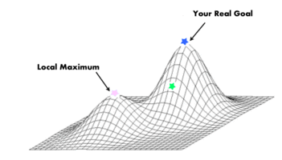

Parable of Alien Chess
by Luke Smith
A parable on the Logical Postivist "interpretation" of scientific models.
The Parable
Suppose an alien race comes to Earth and wants to observe our games. They are very interested in chess, despite the fact that they have eyes with properties that make it impossible to make out what actually happens on a chess board. (The whites and blacks and squares all blur together.)
They can still learn about chess experimentally, they know they can sit two players (a so-called "white" and "black" player) down to play it, and they can tell behaviorally who at the end wins.
After extensive experimentation, they realize this: 50% of the time, the white player wins and 50% of the time, the black player wins (we'll ignore draws and any first-move advantage for the example).
The "best" model
A logical positivist alien thus creates the ultimate, long-term model of chess as an iterated game: Chess amounts to just a drawn-out coin flip. Half of the time white wins, half of the time black wins, just as if they were tossing a quarter.
The aliens then decide to model chess as a coin flip, as a 50-50 game with no underlying principles. While this statistical technique might not be useful for predicting a single game, over the long run and over iterated games, it is the most efficient and parsimonious possible model.
"Inferior" models
Suppose, however that a "crank" scientist of the alien race posits that "God doesn't play dice" and that chess is a more complicated game, despite the fact that the aliens cannot observe it. Suppose even he asks around and determines from humans that there are actually pieces on the board with functions, and he even devises a machine that allows his alien eyes to see the first move of the game of chess.
Seeing this move allows him to create a new theory and model of the game, one that takes into account the first move made and he tries to generate a new set of probabilities of victory based on that move. The model he makes, is of course highly arbitrary, stipulated and ad hoc. In fact, this model is inferior on many inevitable accounts. For example:
- It is less predictive over iterated games than the coin flip model.
- It is not as parsimonious/minimal as the coin flip model.
- It adds new variables to the theory (pieces) that are suspect.
Which model is "right?"
Which model is closer to truth?
Since we, unlike the aliens, are not prevented by defect from observing chess, we know that the second, "inferior" theory of chess is truer. Its theoretical categories, if apparently arbitrary in the eyes of the aliens, are getting at the actual underlying mechanics of chess. Even if the model is less effective, it is certainly righter.
Which will cause fruitful scientific inquiry?
The coin flip model is a scientific dead-end. Firstly, the coin flip model is constructed statistically, which presents the underlying mechanism to be randomness, and thus unworth of inquiry. This isn't statistics hoisted above random variation we know to exist, instead, it's utterly blind statistics that covers over whatever principles underlie it.
Secondly and more importantly, in order to actually improve that model, it has to lose empirical solvency: embracing the abstractions of pieces means introducing mess and deviating in some way from the empircal generalization that half of all chess games are won by white and half by black.
This is not an abnormal circumstance.
The parable here, really an example is not abnormal. In most affairs in science, whether that be physics or neuroscience or economics or chemistry, we are exactly like the partially-blind aliens.
"But science isn't about truth!"
Yeah, it is dude.
Even if you are pretending that science is about "models" or fitting equations and the like, again, the well-fit model is impossible to perfect, while the flawed, yet more true to reality model does have a potential over the long-term to be a superior one. After exhaustive inquiry, an alien race might not only discover the pieces and the full set of rules behind chess, they might be able to predict what moves are good or bad and predict individual chess games. Even on the standards of mere instrumentalism, the mindless positivistic theory is still actually inferior.
Local maxima
The plot
One of the ways I visualize science and models is that each model is really like an n-dimensional optimization plot. "Truth," or if you deny truth as metaphysics, "accuracy in data" or "well-fit equations" are upwards and the goal of science is to get further that way.
At the point you're at, you can tell which direction you can go to move upward, or, which little changes you can make to improve your model. That is what incremental science is, after all: don't change assumptions and just fine-tune your equations. The endless fine-tuning is sometimes thought of as "progress." Of course I don't think that this is bad, but it is a very minor and scientifically less important part of science as a whole.
The reality of incremental science is that once you're at a local maximum, once you've fine-tuned your equations about as perfectly as possible, it's over. Everything next to you looks like a disimprovement. It looks just like those inferior theories of alien chess that posit the existence of pieces. From that, you might erroneously conclude that you have found the global maximum, which due to the nature of the complexity of the universe and the multiplicity of possible answers and theories, you flatly haven't.
Logical positivism is kind of theoretical lobotomy that implicitly tells scientists that they should never, ever, ever change foundational assumptions: tweaking equations like an oblivious autist is Science®️ and everything else is "philosophy" or "metaphysics" or "pseudoscience." This amounts to keeping each scientific field on whatever local maximum is closest, utterly unable to extricate themselves from it even when they see on the horizon abberant data. If you want to understand the stagnation of science or any other specific field, this is where it comes from.
Purposefully "bad" science
In Against Method, Paul Feyerabend, in what an unreflective mind might misinterpret as a "troll," says that it is important for science that people have biases, financial interests, interfering religious and political doctrines and the like in science. Looking at the plot, you might now see why. When we are stuck on a local maximum, every new data keeps our already-optimized model where it is no matter how low that maximum actually is. What you need to shake it up is an external shock that totally moves our theoretical position somewhere new on the plot where we can try to optimize at another point, and then compare.
Basic assumptions
A prudent person should be able to question, "Am I even on the right track or am I playing with some model that has a fundamental flaw?" I can guarantee you, optimizing for data and fitting math and equations is easy. All theoretical programs are wrong because they make incorrect core assumptions. This is very hard for the ego of scientists because it means:
- Possibly illiterate dilettantes on the internet might see and bring to attention legitimate theoretical flaws.
- All the years you spend in graduate school counting angels on pinheads in your respective theoretical framework is mostly a waste of time.
- The borders of science are borders more of a sociological club than being the border of raw rigor.
- Most of the scientific work is not meaningful outside of the theoretical framework that gave rise to it.